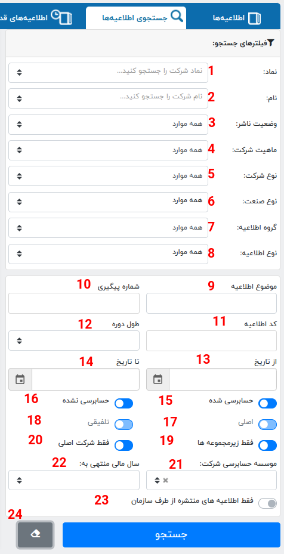

import nest_asyncio
nest_asyncio.apply()کدال
نکته. اگر از محیط ژوپیتر استفاده میکنید این کد را اجرا کنید.
گرفتن لینک با تنظیم فیلتر برای جستجوی گزارشات از کدال
پر کردن جدول شرکتهای لیست شده در کدال
from codal_tsetmc import fill_companies_table
fill_companies_table()relation "companies" already exists
دانلود دادههای مورد نیاز برای جستجو
from codal_tsetmc import fill_categories_table
fill_categories_table()relation "company_statuses" already exists
تعریف یک جستجو
برای تنظیم یک جستجو یا (query) باید ابتدا یک شی یا (object) از کلاس جستجوی کدال (CodalQuery) ایجاد کنید بعد تنظیمات دلخواه را روی آن اعمال کنید
تنظیمات برای جستجو
تنظیمات موجود در کلاس جستجوی کدال به همراه مقادیر پیشفرض

#| eval: false
# وارد کردن یک شی جستجوی کدال
from codal_tsetmc import CodalQuery
# ساختن یک شی از شی جستجوی کدال
query = CodalQuery()
#1. تنظیم نام نماد
query.set_symbol(symbol: str = "")
#2. تنظیم وضعیت ناشر
query.set_publisher_status(title: str = "")
#3. تنظیم گروع اطلاعیه
query.set_category(title: str = "")
#4. تنظیم نوع شرکت
query.set_company_type(title: str = "")
#5. تنظیم نوع اطلاعیه
query.set_letter_type(title: str = "")
#6. تنظیم موضوع اطلاعیه
query.set_subject(subject: str = "")
#7. تنظیم شماره پیگیری
query.set_tracing_no(no: str = "")
#8. تنظیم کد اطلاعیه
query.set_letter_code(code: str = "")
#9. تنظیم طول دوره
query.set_length_period(period=-1)
#10. تنظیم از تاریخ
query.set_from_date(date: str = "1300/01/01")
#11. تنظیم تا تاریخ
query.set_to_date(date: str = "1500/01/01")
#12. تنظیم حسابرسی شده
query.set_audited(status: bool = True)
#13. تنظیم حسابرسی نشده
query.set_not_audited(status: bool = True)
#14. تنظیم اصلی
query.set_consolidatable(status: bool = True)
#15. تنظیم تلفیقی
query.set_not_consolidatable(status: bool = True)
#16. تنظیم فقط زیرمجموعه ها
query.set_childs(status: bool = True)
#17. تنظیم فقط شرکت اصلی
query.set_mains(status: bool = True)
#18. تنظیم موسسه حسابرسی شرکت
query.set_auditor_ref(name: str = None)
#19. سالی مالی منتهی به
query.set_year_end_to_date(date: str = "1300/01/01")
#20. تنظیم فقط اطلاعیه های منتشر شده از طرف سازمان
query.set_publisher(status: bool = True)
#21. حذف تنظیمات
query.remove_none(dictionary)
# تنظیم شماره ISIC
query.set_isic(isic: str = "")
# تنظیم شماره صفحه
query.set_page_number(number: int = 0)
# گرفتن شماره صفحه
query.get_page_number()
# نمایش تعداد صفحات جستجو
query.page
# گرفتن مواد تنظیم شده برای جستجو
query.params
"""################
گرفتن لینک کوئری کدال
################"""
#22. گرفتن لینک
query.get_query_url(api: bool = True)
#22. گرفتن لیست گزارش
query.get_report_list_url()
#22. گرفتن کوئری جستوجو
query.get_api_search_url()
"""################
گرفتن اطلاعات از کدال
################"""
# گرفتن اطلاعات کلی در یک صفحه
query.get_api_sigle_page()
# گرفتن اطلاعات کلی در همه صفحات
query.get_api_multi_page(pages: int = 0)
# گرفتن اطلاعات کلی تمام صفحات به صورت یک فرمت داده
query.get_letters(pages: int = 0, show = False)
# نمایش اطلاعات نامهها و صورتمالیهای جستجو شده
query.lettersگرفتن یک جستجوی خاص برای چند نماد با سرعت بالا و ذخیره آن در دیتابیس
#| eval: false
from codal_tsetmc.download.codal.letters import *
# گرفتن و ذخیره لیست گزارشات با یک جستجوی مشابه برای لیستی از نمادها و ذخیره در دیتابیس
update_letters_table(
query: CodalQuery,
symbols: list,
msg: str = ""
)یک مثال از نحوه استفاده
- تنظیم فیلترهای دلخواه
from codal_tsetmc import CodalQuery
query = CodalQuery()- نام نماد
query.set_symbol("وبملت")- از تاریخ
query.set_from_date("1400/01/01")- گروه اطلاعیه
query.set_category('اطلاعات و صورت مالی سالانه')- نوع اطلاعیه
query.set_letter_type('اطلاعات و صورتهای مالی میاندوره ای')- حذف حسابرسی نشدهها یا حذف حسابرسی شدهها
query.set_not_audited(False)
# query.set_audited(False)- فقط زیر مجموعهها
query.set_childs(False)- نمایش موارد تنظیم شده
query.params{'PageNumber': 1,
'Symbol': 'وبملت',
'PublisherStatus': -1,
'Category': 1,
'CompanyType': -1,
'LetterType': 6,
'Subject': -1,
'TracingNo': -1,
'LetterCode': -1,
'Lenght': -1,
'FromDate': '1400/01/01',
'ToDate': -1,
'Audited': 'true',
'NotAudited': 'false',
'Consolidatable': 'true',
'NotConsolidatable': 'true',
'Childs': 'false',
'Mains': 'true',
'AuditorRef': -1,
'YearEndToDate': -1,
'Publisher': 'false'}- گرفتن لینک برای مرورگر
query.get_report_list_url()'https://codal.ir/ReportList.aspx?search&PageNumber=1&Symbol=%D9%88%D8%A8%D9%85%D9%84%D8%AA&Category=1&LetterType=6&FromDate=1400%2F01%2F01&Audited=true&NotAudited=false&Consolidatable=true&NotConsolidatable=true&Childs=false&Mains=true&Publisher=false'- گرفتن لینک برای api
query.get_query_url()'https://search.codal.ir/api/search/v2/q?&PageNumber=1&Symbol=%D9%88%D8%A8%D9%85%D9%84%D8%AA&Category=1&LetterType=6&FromDate=1400%2F01%2F01&Audited=true&NotAudited=false&Consolidatable=true&NotConsolidatable=true&Childs=false&Mains=true&Publisher=false&search=true'- گرفتن لیست گزارشات
query.get_api_multi_page()[{'SuperVision': {'UnderSupervision': 1,
'AdditionalInfo': '',
'Reasons': ['عدم ارائه صورت\u200cهای مالی ۱۲ ماهه حسابرسی شدۀ شرکت اصلی و تلفیقی گروه',
'عدم ارائه گزارش هیئت\u200cمدیره به مجمع و اظهارنظر حسابرس در مورد آن',
'عدم ارائه گزارش تفسیری مدیریت ۱۲ ماهه حسابرسی شده']},
'TracingNo': 1116260,
'Symbol': 'وبملت',
'CompanyName': 'بانک ملت',
'UnderSupervision': 0,
'Title': 'اطلاعات و صورت\u200cهای مالی میاندوره\u200cای تلفیقی دوره ۶ ماهه منتهی به ۱۴۰۲/۰۶/۳۱ (حسابرسی شده)',
'LetterCode': 'ن-۱۰',
'SentDateTime': '۱۴۰۲/۰۹/۱۵ ۲۰:۰۳:۳۵',
'PublishDateTime': '۱۴۰۲/۰۹/۱۵ ۲۰:۰۳:۳۵',
'HasHtml': True,
'IsEstimate': False,
'Url': '/Reports/Decision.aspx?LetterSerial=OVLjMIHaAZsXZK6TitYWxQ%3d%3d&rt=3&let=6&ct=0&ft=-1',
'HasExcel': True,
'HasPdf': True,
'HasXbrl': False,
'HasAttachment': True,
'AttachmentUrl': '/Reports/Attachment.aspx?LetterSerial=OVLjMIHaAZsXZK6TitYWxQ%3d%3d',
'PdfUrl': 'DownloadFile.aspx?hs=OVLjMIHaAZsXZK6TitYWxQ%3d%3d&ft=1005&let=6',
'ExcelUrl': 'https://excel.codal.ir/service/Excel/GetAll/OVLjMIHaAZsXZK6TitYWxQ%3d%3d/0',
'XbrlUrl': '',
'TedanUrl': 'http://www.tedan.ir'},
{'SuperVision': {'UnderSupervision': 1,
'AdditionalInfo': '',
'Reasons': ['عدم ارائه صورت\u200cهای مالی ۱۲ ماهه حسابرسی شدۀ شرکت اصلی و تلفیقی گروه',
'عدم ارائه گزارش هیئت\u200cمدیره به مجمع و اظهارنظر حسابرس در مورد آن',
'عدم ارائه گزارش تفسیری مدیریت ۱۲ ماهه حسابرسی شده']},
'TracingNo': 1041366,
'Symbol': 'وبملت',
'CompanyName': 'بانک ملت',
'UnderSupervision': 0,
'Title': 'صورت\u200cهای مالی تلفیقی سال مالی منتهی به ۱۴۰۱/۱۲/۲۹ (حسابرسی شده)',
'LetterCode': 'ن-۱۰',
'SentDateTime': '۱۴۰۲/۰۳/۲۸ ۲۰:۲۹:۵۴',
'PublishDateTime': '۱۴۰۲/۰۳/۲۸ ۲۰:۲۹:۵۴',
'HasHtml': True,
'IsEstimate': False,
'Url': '/Reports/Decision.aspx?LetterSerial=5mk9zW2T9eTUWjPZUakQQQaQQQ8A%3d%3d&rt=3&let=6&ct=0&ft=-1',
'HasExcel': True,
'HasPdf': True,
'HasXbrl': False,
'HasAttachment': True,
'AttachmentUrl': '/Reports/Attachment.aspx?LetterSerial=5mk9zW2T9eTUWjPZUakQQQaQQQ8A%3d%3d',
'PdfUrl': 'DownloadFile.aspx?hs=5mk9zW2T9eTUWjPZUakQQQaQQQ8A%3d%3d&ft=1005&let=6',
'ExcelUrl': 'https://excel.codal.ir/service/Excel/GetAll/5mk9zW2T9eTUWjPZUakQQQaQQQ8A%3d%3d/0',
'XbrlUrl': '',
'TedanUrl': 'http://www.tedan.ir'},
{'SuperVision': {'UnderSupervision': 1,
'AdditionalInfo': '',
'Reasons': ['عدم ارائه صورت\u200cهای مالی ۱۲ ماهه حسابرسی شدۀ شرکت اصلی و تلفیقی گروه',
'عدم ارائه گزارش هیئت\u200cمدیره به مجمع و اظهارنظر حسابرس در مورد آن',
'عدم ارائه گزارش تفسیری مدیریت ۱۲ ماهه حسابرسی شده']},
'TracingNo': 966408,
'Symbol': 'وبملت',
'CompanyName': 'بانک ملت',
'UnderSupervision': 0,
'Title': 'اطلاعات و صورت\u200cهای مالی میاندوره\u200cای تلفیقی دوره ۶ ماهه منتهی به ۱۴۰۱/۰۶/۳۱ (حسابرسی شده)',
'LetterCode': 'ن-۱۰',
'SentDateTime': '۱۴۰۱/۰۹/۱۵ ۱۹:۵۶:۵۷',
'PublishDateTime': '۱۴۰۱/۰۹/۱۵ ۱۹:۵۶:۵۷',
'HasHtml': True,
'IsEstimate': False,
'Url': '/Reports/Decision.aspx?LetterSerial=OrRG4vaz36UjbkVcznu8fA%3d%3d&rt=3&let=6&ct=0&ft=-1',
'HasExcel': True,
'HasPdf': True,
'HasXbrl': False,
'HasAttachment': True,
'AttachmentUrl': '/Reports/Attachment.aspx?LetterSerial=OrRG4vaz36UjbkVcznu8fA%3d%3d',
'PdfUrl': 'DownloadFile.aspx?hs=OrRG4vaz36UjbkVcznu8fA%3d%3d&ft=1005&let=6',
'ExcelUrl': 'https://excel.codal.ir/service/Excel/GetAll/OrRG4vaz36UjbkVcznu8fA%3d%3d/0',
'XbrlUrl': '',
'TedanUrl': 'http://www.tedan.ir'},
{'SuperVision': {'UnderSupervision': 1,
'AdditionalInfo': '',
'Reasons': ['عدم ارائه صورت\u200cهای مالی ۱۲ ماهه حسابرسی شدۀ شرکت اصلی و تلفیقی گروه',
'عدم ارائه گزارش هیئت\u200cمدیره به مجمع و اظهارنظر حسابرس در مورد آن',
'عدم ارائه گزارش تفسیری مدیریت ۱۲ ماهه حسابرسی شده']},
'TracingNo': 896865,
'Symbol': 'وبملت',
'CompanyName': 'بانک ملت',
'UnderSupervision': 0,
'Title': 'صورت\u200cهای مالی تلفیقی سال مالی منتهی به ۱۴۰۰/۱۲/۲۹ (حسابرسی شده)',
'LetterCode': 'ن-۱۰',
'SentDateTime': '۱۴۰۱/۰۳/۲۹ ۰۰:۰۲:۰۱',
'PublishDateTime': '۱۴۰۱/۰۳/۲۹ ۰۰:۰۲:۰۱',
'HasHtml': True,
'IsEstimate': False,
'Url': '/Reports/Decision.aspx?LetterSerial=YLhTbKc77KtnbMHocooRSQ%3d%3d&rt=3&let=6&ct=0&ft=-1',
'HasExcel': True,
'HasPdf': True,
'HasXbrl': False,
'HasAttachment': True,
'AttachmentUrl': '/Reports/Attachment.aspx?LetterSerial=YLhTbKc77KtnbMHocooRSQ%3d%3d',
'PdfUrl': 'DownloadFile.aspx?hs=YLhTbKc77KtnbMHocooRSQ%3d%3d&ft=1005&let=6',
'ExcelUrl': 'https://excel.codal.ir/service/Excel/GetAll/YLhTbKc77KtnbMHocooRSQ%3d%3d/0',
'XbrlUrl': '',
'TedanUrl': 'http://www.tedan.ir'},
{'SuperVision': {'UnderSupervision': 1,
'AdditionalInfo': '',
'Reasons': ['عدم ارائه صورت\u200cهای مالی ۱۲ ماهه حسابرسی شدۀ شرکت اصلی و تلفیقی گروه',
'عدم ارائه گزارش هیئت\u200cمدیره به مجمع و اظهارنظر حسابرس در مورد آن',
'عدم ارائه گزارش تفسیری مدیریت ۱۲ ماهه حسابرسی شده']},
'TracingNo': 825953,
'Symbol': 'وبملت',
'CompanyName': 'بانک ملت',
'UnderSupervision': 0,
'Title': 'اطلاعات و صورت\u200cهای مالی میاندوره\u200cای تلفیقی دوره ۶ ماهه منتهی به ۱۴۰۰/۰۶/۳۱ (حسابرسی شده)',
'LetterCode': 'ن-۱۰',
'SentDateTime': '۱۴۰۰/۰۹/۱۵ ۲۲:۰۱:۳۲',
'PublishDateTime': '۱۴۰۰/۰۹/۱۵ ۲۲:۰۱:۳۲',
'HasHtml': True,
'IsEstimate': False,
'Url': '/Reports/Decision.aspx?LetterSerial=TLOQ83KhULOFMQQQaQQQYZIZ5H5A%3D%3D&rt=3&let=6&ct=0&ft=-1',
'HasExcel': True,
'HasPdf': True,
'HasXbrl': False,
'HasAttachment': True,
'AttachmentUrl': '/Reports/Attachment.aspx?LetterSerial=TLOQ83KhULOFMQQQaQQQYZIZ5H5A%3d%3d',
'PdfUrl': 'DownloadFile.aspx?hs=TLOQ83KhULOFMQQQaQQQYZIZ5H5A%3d%3d&ft=1005&let=6',
'ExcelUrl': 'https://excel.codal.ir/service/Excel/GetAll/TLOQ83KhULOFMQQQaQQQYZIZ5H5A%3d%3d/0',
'XbrlUrl': '',
'TedanUrl': 'http://www.tedan.ir'},
{'SuperVision': {'UnderSupervision': 1,
'AdditionalInfo': '',
'Reasons': ['عدم ارائه صورت\u200cهای مالی ۱۲ ماهه حسابرسی شدۀ شرکت اصلی و تلفیقی گروه',
'عدم ارائه گزارش هیئت\u200cمدیره به مجمع و اظهارنظر حسابرس در مورد آن',
'عدم ارائه گزارش تفسیری مدیریت ۱۲ ماهه حسابرسی شده']},
'TracingNo': 768588,
'Symbol': 'وبملت',
'CompanyName': 'بانک ملت',
'UnderSupervision': 0,
'Title': 'صورت\u200cهای مالی تلفیقی سال مالی منتهی به ۱۳۹۹/۱۲/۳۰ (حسابرسی شده)',
'LetterCode': 'ن-۱۰',
'SentDateTime': '۱۴۰۰/۰۴/۲۰ ۱۱:۲۰:۳۶',
'PublishDateTime': '۱۴۰۰/۰۴/۲۰ ۱۱:۲۰:۳۶',
'HasHtml': True,
'IsEstimate': False,
'Url': '/Reports/Decision.aspx?LetterSerial=Qlz4uFzkkEGRvIQUhty5IQ%3D%3D&rt=3&let=6&ct=0&ft=-1',
'HasExcel': True,
'HasPdf': True,
'HasXbrl': False,
'HasAttachment': True,
'AttachmentUrl': '/Reports/Attachment.aspx?LetterSerial=Qlz4uFzkkEGRvIQUhty5IQ%3d%3d',
'PdfUrl': 'DownloadFile.aspx?hs=Qlz4uFzkkEGRvIQUhty5IQ%3d%3d&ft=1005&let=6',
'ExcelUrl': 'https://excel.codal.ir/service/Excel/GetAll/Qlz4uFzkkEGRvIQUhty5IQ%3d%3d/0',
'XbrlUrl': '',
'TedanUrl': 'http://www.tedan.ir'}]- گرفتن تمام صفحات و ذخیره آن درون شی
query.get_letters()- نمایش صفحات ذخیره شده
query.letters| publish_date_time | sent_date_time | tracing_no | letter_serial | letter_code | letter_types | letter_title | company_symbol | company_name | |
|---|---|---|---|---|---|---|---|---|---|
| 0 | 14020915200335 | 14020915200335 | 1116260 | OVLjMIHaAZsXZK6TitYWxQ%3d%3d | ن-10 | صورت های مالی میان دوره ای | اطلاعات و صورتهای مالی میاندورهای تلفیقی دور... | وبملت | بانک ملت |
| 1 | 14020328202954 | 14020328202954 | 1041366 | 5mk9zW2T9eTUWjPZUakQQQaQQQ8A%3d%3d | ن-10 | صورت های مالی میان دوره ای | صورتهای مالی تلفیقی سال مالی منتهی به 1401/12... | وبملت | بانک ملت |
| 2 | 14010915195657 | 14010915195657 | 966408 | OrRG4vaz36UjbkVcznu8fA%3d%3d | ن-10 | صورت های مالی میان دوره ای | اطلاعات و صورتهای مالی میاندورهای تلفیقی دور... | وبملت | بانک ملت |
| 3 | 14010329000201 | 14010329000201 | 896865 | YLhTbKc77KtnbMHocooRSQ%3d%3d | ن-10 | صورت های مالی میان دوره ای | صورتهای مالی تلفیقی سال مالی منتهی به 1400/12... | وبملت | بانک ملت |
| 4 | 14000915220132 | 14000915220132 | 825953 | TLOQ83KhULOFMQQQaQQQYZIZ5H5A%3D%3D | ن-10 | صورت های مالی میان دوره ای | اطلاعات و صورتهای مالی میاندورهای تلفیقی دور... | وبملت | بانک ملت |
| 5 | 14000420112036 | 14000420112036 | 768588 | Qlz4uFzkkEGRvIQUhty5IQ%3D%3D | ن-10 | صورت های مالی میان دوره ای | صورتهای مالی تلفیقی سال مالی منتهی به 1399/12... | وبملت | بانک ملت |
- گرفتن و ذخیره لیست گزارشات برای چند نماد با سرعت بالا در دیتابیس
from codal_tsetmc.download.codal.letters import update_letters_table
update_letters_table(query, ["فولاد", "فملی", "شپنا"])relation "letters" already exists
relation "letters" already exists
relation "letters" already exists
update_letter_table_by_urls: None- گرفتن لیست گزارشات نماد خاص در دیتابیس
from codal_tsetmc.tools.database import read_table_by_conditions
read_table_by_conditions(table="letters", variable="symbol", value="فولاد")| publish_date_time | sent_date_time | tracing_no | letter_serial | letter_code | letter_types | letter_title | symbol | name | |
|---|---|---|---|---|---|---|---|---|---|
| 0 | 14020426214952 | 14020426214952 | 1055774 | SS97V5jtRN0QQQaQQQscZebQQQaQQQvRwg%3d%3d | ن-10 | صورت های مالی میان دوره ای | صورتهای مالی تلفیقی سال مالی منتهی به 1401/12... | فولاد | فولاد مبارکه اصفهان |
| 1 | 14021107184454 | 14021107184454 | 1096229 | 4aQQQaQQQJI3W6uTKLoHuoFjH7zA%3d%3d | ن-10 | صورت های مالی میان دوره ای | اطلاعات و صورتهای مالی میاندورهای تلفیقی دور... | فولاد | فولاد مبارکه اصفهان |
| 2 | 14011029125540 | 14011029125540 | 982256 | QQQaQQQtdXtHxpzUX3vJk1C1JfUw%3d%3d | ن-10 | صورت های مالی میان دوره ای | اطلاعات و صورتهای مالی میاندورهای تلفیقی دور... | فولاد | فولاد مبارکه اصفهان |
| 3 | 14010509103042 | 14010509103042 | 912864 | AuFIYwI3LY424zd3p4ij5A%3d%3d | ن-10 | صورت های مالی میان دوره ای | صورتهای مالی تلفیقی سال مالی منتهی به 1400/12... | فولاد | فولاد مبارکه اصفهان |
| 4 | 14001124155735 | 14001124155735 | 852911 | cQd9yigizoTueJdP5SZofw%3D%3D | ن-10 | صورت های مالی میان دوره ای | اطلاعات و صورتهای مالی میاندورهای تلفیقی دور... | فولاد | فولاد مبارکه اصفهان |
| 5 | 14000507165312 | 14000507165312 | 762282 | NDR8Dkp6Fm%2BEHtNIfHDW5A%3D%3D | ن-10 | صورت های مالی میان دوره ای | صورتهای مالی تلفیقی سال مالی منتهی به 1399/12... | فولاد | فولاد مبارکه اصفهان |
- گرفتن لیست گزارشات از دیتابیس با کوئری
from codal_tsetmc.tools.database import read_table_by_sql_query
df = read_table_by_sql_query(
"""
SELECT *
FROM letters
WHERE symbol IN (
'فولاد',
'فملی',
'شپنا'
)
"""
)
df.head()| publish_date_time | sent_date_time | tracing_no | letter_serial | letter_code | letter_types | letter_title | symbol | name | |
|---|---|---|---|---|---|---|---|---|---|
| 0 | 14020426214952 | 14020426214952 | 1055774 | SS97V5jtRN0QQQaQQQscZebQQQaQQQvRwg%3d%3d | ن-10 | صورت های مالی میان دوره ای | صورتهای مالی تلفیقی سال مالی منتهی به 1401/12... | فولاد | فولاد مبارکه اصفهان |
| 1 | 14020916021316 | 14020916021316 | 1117547 | m7Al4zMK6ehzTl5IYHXJMw%3d%3d | ن-10 | صورت های مالی میان دوره ای | اطلاعات و صورتهای مالی میاندورهای تلفیقی دور... | فملی | ملی صنایع مس ایران |
| 2 | 14020421234934 | 14020421234934 | 1053560 | uNTArPkEcdZwlQ3qCxrlGA%3d%3d | ن-10 | صورت های مالی میان دوره ای | صورتهای مالی تلفیقی سال مالی منتهی به 1401/12... | فملی | ملی صنایع مس ایران |
| 3 | 14010915211100 | 14010915211100 | 967888 | ysRiJ5CYn9VX%2bdsPleOp8A%3d%3d | ن-10 | صورت های مالی میان دوره ای | اطلاعات و صورتهای مالی میاندورهای تلفیقی دور... | فملی | ملی صنایع مس ایران |
| 4 | 14010418192728 | 14010418192728 | 909751 | lsZrb35rwgAN7wObVrYtKw%3d%3d | ن-10 | صورت های مالی میان دوره ای | صورتهای مالی تلفیقی سال مالی منتهی به 1400/12... | فملی | ملی صنایع مس ایران |